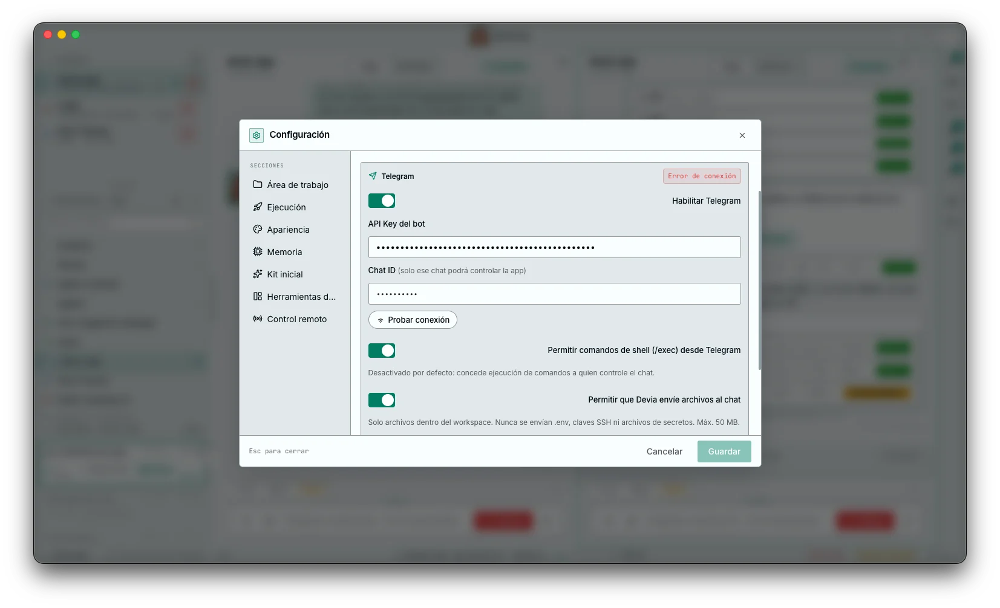

Documentació de Devia Desktop
Què és Devia Desktop?
Devia Desktop és una aplicació d'escriptori per a desenvolupar programari amb agents d'IA. És una interfície unificada sobre diversos CLIs agèntics (Claude Code, Codex, Gemini CLI i més) que convertix el treball amb agents en terminal en una experiència visual, organitzada i multiprojecte.
És codi obert (Apache-2.0): gratis i amb totes les funcions, disponible per a Windows, macOS i Linux. Tot funciona en local, sobre els teus projectes i els teus CLIs; no necessita compte ni connexió a cap servei de Devia.
Instal·lació
Windows
- Descarrega l'instal·lador
.exedes de la pàgina de descàrregues. - Executa'l i tria el directori d'instal·lació (instal·lació per usuari, sense permisos d'administrador).
- Si SmartScreen mostra un avís, prem «Més informació → Executar igualment».
macOS
- Descarrega el
.dmgde la teua arquitectura (Apple Silicon o Intel). - Obri'l i arrossega Devia a la carpeta Aplicacions.
- L'app està signada i notaritzada per Apple: s'obri sense passos addicionals.
Linux
- AppImage: descarrega'l, dona-li permisos amb
chmod +x Devia-*.AppImagei executa'l. - Debian/Ubuntu: instal·la el paquet amb
sudo dpkg -i devia_*_amd64.deb.
Primers passos
- Tria el teu workspace. La primera vegada que obris Devia, un modal et demana la carpeta arrel on viuen els teus projectes (per exemple
~/repos). Devia llista els projectes que conté i detecta la seua tecnologia. - Connecta un agent. Devia detecta els CLIs agèntics instal·lats en la teua màquina i et deixa triar l'agent actiu en Configuració. Cada projecte queda configurat perquè l'agent funcione sense ajustos manuals.
- Conversa. Obri un projecte i escriu la teua primera instrucció en el compositor. Tria el mode d'execució: plan (només planifica), apply (aplica amb permisos) o apply-yolo (sense confirmacions), segons quanta autonomia vulgues donar.
- Revisa. Cada resposta arriba en streaming amb markdown, les crides a ferramentes es despleguen en targetes i els canvis de l'agent es veuen com a diffs en línia.
Agents compatibles
Devia dirigix els CLIs de codificació següents i pots canviar d'un a un altre sense eixir de l'app. El nivell d'integració varia segons l'agent:
| Agent | Integració |
|---|---|
| Claude Code | La més completa: servidors MCP per execució, targetes de sub-agents en el xat i represa automàtica després d'un límit d'ús. |
| OpenCode | Integració dedicada. |
| Pi | Integració dedicada. |
| Kimi i Hermes | Mitjançant Agent Client Protocol (ACP). El perfil de Kimi encara no està verificat contra el CLI real. |
| Codex, Gemini CLI, Cursor Agent, GitHub Copilot CLI, Grok, Qwen, Qoder i DeepSeek | Integració genèrica sobre el streaming de cada CLI. |
| El teu propi agent | Qualsevol CLI que parle ACP es pot definir en agent-defs.json. |
En continuar una sessió amb un agent diferent del que la va iniciar, Devia fa un traspàs de context: injecta un resum del treball (objectiu, fitxers tocats i últims intercanvis) en el primer torn del nou agent i deixa un divisor en el xat. El resum generat per IA requerix Claude i ANTHROPIC_API_KEY.
Què pot fer Devia
Agents i execució
- Modes plan, apply i apply-yolo guardats per sessió. Com s'apliquen depén de l'agent: en Codex, per exemple, el mode plan es recolza en les instruccions del prompt.
- Importa sessions existents de Claude Code, Codex i Grok i continua-les en Devia.
- Amb Claude Code, Devia reprén la sessió soleta després d'un límit d'ús, mentre l'app continue oberta.
- Context usat, cost, tokens i compactacions de cada sessió, calculats en local.
- Cua d'instruccions per projecte: encua prompts mentre l'agent treballa, reordena'ls amb arrossegar i soltar, pausa i reprén.
- Les crides dels sub-agents de Claude Code apareixen aniuades en el xat.

Multiprojecte i vista dividida
- Llistat, creació (buit o des de plantilla) i clonatge de projectes; favorits ancorats en la barra lateral.
- Historial de sessions per projecte que sobreviu als reinicis.
- Fins a 4 panells (2×2) en la mateixa finestra, cadascun amb la seua pròpia sessió i el seu agent treballant en paral·lel.
- Cada panell addicional treballa aïllat en el seu propi git worktree, perquè dos agents mai trepitgen els mateixos fitxers.

Context i memòria
- Memòria persistent entre sessions (
devia-memory), personal i per projecte, amb reordenació semàntica opcional. L'agent la consulta i l'alimenta; tu la gestiones en Configuració. - Graf de codi propi (6 llenguatges) que els agents consulten per MCP, amb una vista
/graphper a explorar-lo. - Code mode: l'agent escriu un script TypeScript que s'executa en un sandbox sobre els servidors MCP que tries i torna només el resultat. En esta versió els scripts només lligen.


Mètode i planificació
- Kanban per projecte amb specs, tasques i dependències que l'agent llig i actualitza per MCP (
devia-kanban). L'estat viu fora del repositori. - Devia Method: un mètode de desenvolupament propi (skills i prompt d'arrancada) que Devia lliura a tots els agents, activable per projecte.
- Targetes interactives per a qualsevol agent: preguntes, aprovació de plans, revisió de canvis, confirmacions i selecció. Només en escriptori.
- Gestor de skills, locals o des de GitHub, i de sub-agents reutilitzables que Devia sincronitza amb cada CLI.


Git i revisió
- Estat del repositori en viu, visor de diffs en línia, selector de branques i pull només fast-forward.
- Comentaris per línia sobre el diff que s'envien a l'agent com a petició de revisió.
- Instantànies amb restauració de la configuració de MCP, skills i sub-agents abans de modificar-la.
- Els commits, els push i els pull requests els fa l'agent amb les seues pròpies ferramentes: Devia no els crea per si mateix.
Servidors MCP
- Gestor de servidors Model Context Protocol amb un catàleg inicial: instal·la, activa i prova servidors. Devia escriu la configuració en el format natiu de 9 agents.
- Cada servidor es pot oferir directe a l'agent o a través de code mode.
Control remot per Telegram
- Llança execucions, canvia de mode o d'agent, consulta l'estat (branca, context usat, cost) i conversa amb l'agent des de Telegram.
- Enviament d'adjunts a l'agent i recepció dels fitxers que genera. Mirall opcional de la conversa d'escriptori.
- Només funciona mentre Devia està obert i atén un únic xat autoritzat. Les targetes interactives no es mostren en Telegram: l'agent pregunta en text.

Terminal, veu i més
- Terminal integrat per projecte amb PTY real, i obertura del projecte en 10 IDEs.
- Orquestració de Docker Compose: deploy, down i logs per projecte.
- Adjunts de qualsevol tipus (fins a 50 MB per fitxer) i arxiu dels fitxers que genera l'agent.
- Dictat per veu local; hui només en espanyol.
- Registre d'auditoria de cada tool-call.
- Actualització automàtica de les instal·lacions (en Linux, només amb AppImage).
Capacitats i límits
Un resum honest del que Devia fa hui i del que encara no fa, perquè sàpigues què esperar.
El que fa
- Dirigir 13 CLIs agèntics des d'una finestra, amb modes plan, apply i apply-yolo.
- Vista dividida de fins a 4 panells amb git worktrees aïllats.
- Kanban, memòria, graf de codi i code mode accessibles per a l'agent per MCP.
- Gestor de MCP, de skills i de sub-agents.
- Targetes interactives per a preguntar, aprovar plans i revisar canvis.
- Comentaris de revisió per línia enviats a l'agent.
- Control remot per Telegram, amb enviament de fitxers.
- Terminal, Docker Compose i obertura en IDEs.
El que fa en part
- Importar sessions: només des de Claude Code, Codex i Grok.
- Reprendre després d'un límit d'ús: només Claude Code, i només mentre l'app continue oberta.
- Targetes de sub-agents en el xat: només Claude Code.
- Reinjectar la memòria quan l'agent compacta el seu context: només Claude i Pi.
- Agents propis: només els que parlen ACP.
- Dictat per veu: només en espanyol, i el seu funcionament en la versió empaquetada està pendent de verificar.
- Interfície en 11 idiomes: espanyol i anglés estan complets; en la resta pot haver-hi textos sense traduir.
- Telegram: només mentre Devia està obert, amb un únic xat autoritzat, i sense targetes interactives.
El que encara no fa
- Crear commits, fer push o obrir pull requests des de la interfície.
- Usar GitHub, GitLab, Linear o Jira com a font de tasques.
- Editor de fitxers integrat: l'arbre del projecte és de només lectura i els fitxers s'obrin en el teu IDE.
- Un coordinador que llance i supervise diversos agents treballadors. Hui el paral·lelisme és la vista dividida, dirigida per tu.
- Automatitzacions programades o disparades per esdeveniments.
- Executar en servidors remots per SSH, en el núvol o sense interfície gràfica.
- Una app mòbil nativa: el mòbil s'usa a través de Telegram.
- Un sistema de plugins per a panells o temes de tercers.
- Control de l'ordinador, emuladors mòbils o un navegador integrat.
Configuració i dades
Quasi tota la informació de Devia viu en el teu disc, sota ~/.devia-app/ (en Windows, C:\Users\<tu-usuario>\.devia-app\):
| Ruta | Contingut |
|---|---|
devia-app.config.json | Configuració: workspace, agent actiu, idioma… (els secrets, com el token de Telegram, es guarden xifrats) |
sessions/<proyecto>/ | Historial de xat per projecte |
projects/<clave>/ | Dades per projecte: tauler Kanban (kanban.json) i memòria (memory.json) |
memory-global.json | Memòria personal |
mcp-servers.json | Servidors MCP configurats |
snapshots/ | Instantànies de la configuració abans de modificar-la |
worktrees/ | Git worktrees dels panells addicionals de la vista dividida |
attachments/ | Fitxers adjuntats en el compositor o per Telegram |
outbox-archive/ | Fitxers generats per l'agent |
Per a fer còpia de seguretat del teu Devia basta amb copiar eixa carpeta. Esborrar-la torna l'app al seu estat inicial. El registre d'auditoria de les tool-calls es guarda a part, en la carpeta de dades d'usuari de l'aplicació.
Actualitzacions
Les versions publicades s'anuncien en el manifest públic d'este lloc: updates/latest.json. Conté l'última versió disponible, la data de publicació, les notes i els enllaços de descàrrega per plataforma.
Les instal·lacions de Devia Desktop s'actualitzen soles des de les Releases del repositori (en Linux, només amb AppImage). També pots consultar l'última versió a mà o des dels teus scripts:
curl -s https://dherrero.github.io/devia/updates/latest.json | jq .versionPreguntes més freqüents
Devia és gratis?
Sí. Devia Desktop és de codi obert (Apache-2.0), amb totes les funcions, en totes les plataformes.
Necessite compte o connexió a algun servei de Devia?
No. Devia Desktop funciona en local. Els únics serveis externs que s'usen són els dels propis agents CLI que tu tingues configurats.
Devia inclou els agents d'IA?
No: Devia és la interfície que els dirigix. Necessites tindre instal·lat almenys un CLI agèntic (Claude Code, Codex, Gemini CLI, OpenCode…) amb les seues credencials. Devia els detecta i s'encarrega de la resta.
Les meues dades ixen de la meua màquina?
Sessions, memòria, kanban i configuració viuen en ~/.devia-app/. El dictat per veu també s'executa en local. L'únic que viatja és el que envie el CLI de l'agent que uses al seu propi proveïdor.
En quins idiomes està disponible?
Esta web està en espanyol, anglés, valencià, francés, alemany, italià, portugués, rus, xinés, hindi i àrab. L'app té els mateixos 11 idiomes, però només espanyol i anglés estan complets: en els altres poden aparéixer textos sense traduir.
Puc controlar-lo des del mòbil?
Sí, a través de Telegram, sempre que Devia estiga obert en el teu ordinador. No hi ha una app mòbil nativa.
Com reporte un problema?
Obri una incidència en el repositori de GitHub de Devia amb els passos per a reproduir-lo i la teua plataforma (Windows/macOS/Linux).